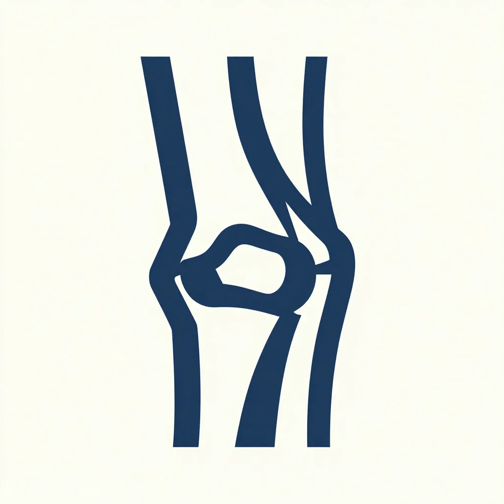

Health & Testing
Responsible, transparent, and rooted in European standards.
CARDIAC SCREENING
All Paradigm Boxers undergo full echocardiogram and Holter monitoring protocols interpreted by specialists. This comprehensive approach ensures excellence in heart health, screening for ARVC and congenital defects like SAS/PS, maintaining the highest standards for the breed.
GENETIC EVALUATION
Degenerative Myelopathy (DM) and ARVC (Arrhythmogenic Right Ventricular Cardiomyopathy) are primary markers. We emphasize genetic screening for SOD1 mutations and DNA testing to mitigate risks and support long-term neurological and cardiac health.

SDMA & KIDNEY SCREENING
We prioritize SDMA screening to identify subtle changes in kidney function far earlier than standard creatinine tests allow. This proactive monitoring is vital for protecting long-term renal health and ensuring our breeding dogs remain in peak condition. This testing is part of our effort to screen for juvenile kidney disease.